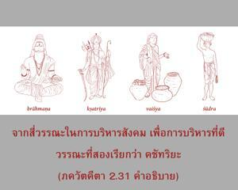
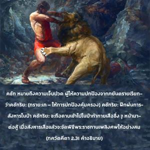
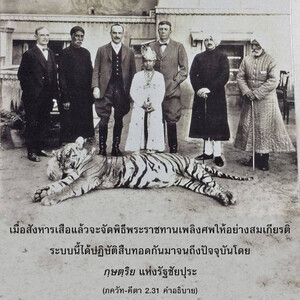
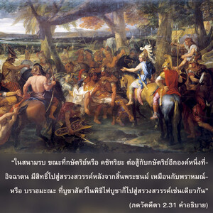
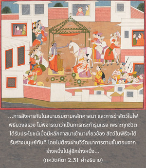

เมื่อพิจารณาหน้าที่โดยเฉพาะของเธอในฐานะที่เป็น กฺษตฺริย เธอควรรู้ว่าไม่มีงานอื่นใดดีไปกว่าการต่อสู้เพื่อหลักศาสนา ดังนั้นจึงไม่จำเป็นต้องลังเลใจ





จากสี่วรรณะในการบริหารสังคมเพื่อการบริหารที่ดีวรรณะที่สองเรียกว่า กฺษตฺริย กฺษตฺ หมายถึงความเจ็บปวด ผู้ให้ความปกป้องจากภยันตรายเรียกว่า กฺษตฺริย (ตฺรายเต -ให้การปกป้องคุ้มครอง) กฺษตฺริย ฝึกฝนการสังหารในป่า กฺษตฺริย จะถือดาบเข้าไปในป่าท้าทายเสือซึ่งๆหน้ามาต่อสู้ เมื่อสังหารเสือแล้วจะจัดพิธีพระราชทานเพลิงศพให้อย่างสมเกียรติ ระบบนี้ได้ปฏิบัติสืบทอดกันมาจนถึงปัจจุบันโดย กฺษตฺริย แห่งรัฐชัยปุระ กฺษตฺริย ได้รับการฝึกฝนเพื่อท้าทายและสังหารโดยเฉพาะ เนื่องจากความรุนแรงทางศาสนาบางครั้งเป็นสิ่งจำเป็น ดังนั้น กฺษตฺริย ไม่ควรบรรพชาเป็น สนฺนฺยาส หรือเป็นผู้สละโลกโดยตรง อหิงสาในการเมืองอาจเป็นศิลปะในการเจรจา แต่ไม่ใช่เป็นปัจจัยหรือเป็นหลักการหนังสือกฎหมายทางศาสนากล่าวไว้ว่า
อาหเวษุ มิโถ ’โนฺยนฺยํ
ชิฆำสนฺโต มหี-กฺษิตห์
ยุทฺธมานาห์ ปรํ ศกฺตฺยา
สฺวรฺคํ ยานฺตฺยฺ อปรางฺ-มุขาห์
ยชฺเญษุ ปศโว พฺรหฺมนฺ
หนฺยนฺเต สตตํ ทฺวิไชห์
สํสฺกฺฤตาห์ กิล มนฺไตฺรศฺ จ
เต ’ปิ สฺวรฺคมฺ อวาปฺนุวนฺ
“ขณะที่กษัตริย์หรือ กฺษตฺริย ต่อสู้กับ กฺษตฺริย อีกองค์หนึ่งที่อิจฉาตนในสนามรบนั้นจะมีสิทธิ์ไปสู่สรวงสวรรค์ หลังจากสิ้นพระชนม์เหมือนกับ พฺราหฺมณ หรือ พฺราหฺมณ ที่บูชาสัตว์ในพิธีไฟบูชาก็จะไปสู่สรวงสวรรค์เช่นเดียวกัน” ดังนั้นการสังหารกันในสนามรบตามหลักศาสนาและการฆ่าสัตว์ในไฟพิธีบวงสรวงจึงไม่พิจารณาว่าเป็นการกระทำรุนแรง เพราะทุกชีวิตได้รับประโยชน์เมื่อมีหลักศาสนาเข้ามาเกี่ยวข้องสัตว์ในพิธีจะได้รับร่างมนุษย์ทันที โดยไม่ต้องผ่านวิวัฒนาการตามขั้นตอนจากร่างหนึ่งไปสู่อีกร่างหนึ่ง กฺษตฺริย ผู้ถูกสังหารในสนามรบจะไปสู่สรวงสวรรค์เหมือน พฺราหฺมณ ผู้ปฏิบัติพิธีบวงสรวงบูชา
มี สฺว-ธรฺม หรือหน้าที่โดยเฉพาะสองประเภท ตราบใดที่ยังไม่หลุดพ้นเราต้องปฏิบัติหน้าที่ให้เหมาะสมกับร่างกายที่ได้มาตามหลักศาสนาเพื่อบรรลุถึงอิสรภาพ เมื่อหลุดพ้นแล้ว สฺว-ธรฺม หรือหน้าที่โดยเฉพาะของเราจะเป็นทิพย์ไม่อยู่ในแนวคิดทางร่างกายวัตถุ ชีวิตที่มีแนวคิดทางร่างกายวัตถุจะมีหน้าที่โดยเฉพาะสำหรับ พฺราหฺมณ และ กฺษตฺริย ตามลำดับหน้าที่เช่นนี้หลีกเลี่ยงไม่ได้ องค์ภควานฺทรงลิขิต สฺว-ธรฺม บทที่สี่จะอธิบายชัดเจนยิ่งขึ้น สฺว-ธรฺม ในระดับร่างกายเรียกว่า วรฺณาศฺรม-ธรฺม หรือขั้นบันไดของมนุษย์เพื่อเข้าใจวิถีทิพย์ ความเจริญรุ่งเรืองของมนุษย์เริ่มต้นจากระดับของ วรฺณาศฺรม-ธรฺม หรือหน้าที่โดยเฉพาะของตนตามระดับเฉพาะของธรรมชาติร่างกายที่ได้รับมา การปฏิบัติหน้าที่โดยเฉพาะของเราไม่ว่าในกิจกรรมใดๆต้องทำตามคำสั่งของผู้ที่เชื่อถือได้ที่สูงกว่า เพื่อพัฒนาตัวเราไปสู่ระดับชีวิตที่สูงขึ้น